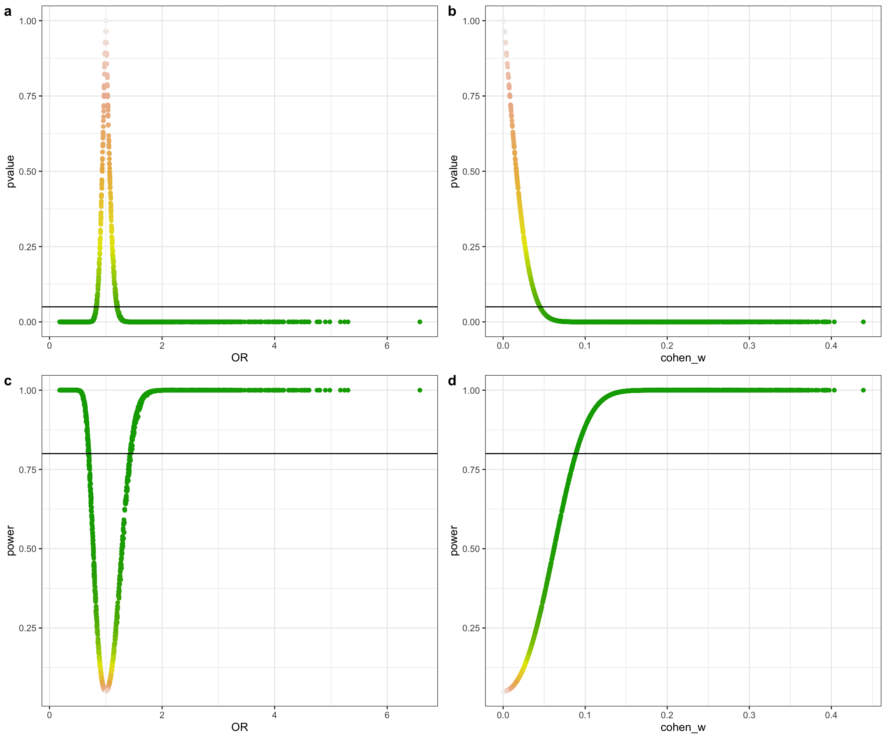

Playing with post-hoc power with R - why we shouldn’t do it
Current state of the matter
The reason for bringing this here is that I witnessed an interesting exchange some time ago, regarding one article and their use of post-hoc power, pinpointed by @ADAlthousePhD:
Hi @scottlemaire, I would like to issue a public expression of concern about a paper published recently in the Journal of Surgical Research, on which you are the editor in chief.
— Andrew Althouse (@ADAlthousePhD) April 30, 2019
...effect sizes of the remaining studies. This is a self-fulfilling prophecy: by definition, any study that failed to find a significant difference is going to appear to have low "post hoc" power.
— Andrew Althouse (@ADAlthousePhD) April 30, 2019
Update for those that commented on the post-hoc power thread yesterday. I have sent my thoughts to the editor in chief (at his invitation, and for which I give him a great deal of credit). If you are also interested in this matter... https://t.co/MqerCamoyi
— Andrew Althouse (@ADAlthousePhD) May 1, 2019
The tweets refer also to this great post: Observed power, and what to do if your editor asks for post-hoc power analyses, written by Daniël Lakens in which this issue is discussed.
At first, I wasn’t too interested in this topic (to be honest); but then I read the above mentioned study, showcasing post-hoc calculations, and a few others that were spreading and being cited (even worse) in a field very, very close to mine: surgery. That’s when it got personal.
Like almost a year ago, I came across this beautiful paper: The Abuse of Power: The Pervasive Fallacy of Power Calculations for Data Analysis by John Hoenig et al.
This paper patiently explains why post-hoc power is bad. Interestingly, the manuscript aims to be understood by scientists of all backgrounds, not only statistical. It uses appealing examples and develops them in a didactic, orderly manner, so a clinician (like myself) can grasp those concepts.
Also, the second paragraph begins using the word “Dismayingly”. How graphic.
What can we do about it?
My two cents to this discussion abut post-hoc power come below in the form of a small R tutorial. It shows (yet again), using the rationale in the paper, how it doesn’t make sense to get power calculations after hypothesis testing.
I hope this can help those peeps that need a more ‘hands-on’ (rather than purely abstract) approach to learning stats! R serves as a great, flexible tool for this!.
Observed power is a function of the p-value
(One determines the other)
TL;DR: nonsignificant p values always correspond to low observed powers.
This piece of code is inspired by the one written by Lakens, only that it is done with p-values from a Chi-Square test, making use of the pwr::pwr.chisq.test() function to get the power of the study. The only problem is that the effect size in this function is given by w, but fortunately w can be estimated from our contingency table using this formula (from Cohen’s book, p.216):
\(w = \sqrt{ \sum_{i=1}^{m} \dfrac{ (P_{1i} - P_{0i})^2 } {P_{0i}} }\)
- \(P_{0i}\) = the proportion in cell i posited by the null hypothesis,
- \(P_{1i}\) = the proportion in cell i posited by the alternate hypothesis and reflects the effect for that cell, and
- \(m\) = the number of cells.
The reason I say “estimate” instead of to “calculate” the range of w values, is that we will use the sample proportions (observed, expected) instead of the population values (which we don’t know). Regardless effect size estimation in this case the results would be the same, so for didactic purposes this should be fine.
Defining the problem: genomic data
Let’s start with a simplified case for the simplest possible contingency table: a 2x2 table featuring an exposure and the affected status in a case-control study:
- The Antithrombin-III-Hamilton disease is characterized by recurrent thromboembolic events (PMID: 3179438).
- Caused by a DNA mutation exchanging Guanine (G) for Adenine (A) in the first base of codon 382 from the AT-III gene. This impairs its serine protease reactivity, thus being less effective blocking thrombus formation.
- Thus, we can consider the “A” allele as the exposure, “G” as the absence of exposure, and the “cases” would be those with recurrent thromboembolic events.
We cannot simulate from a rnorm distribution like in t-tests. To simulate datasets with different table proportions we will set a range of different frequency combinations for two of the cells:
library(tidyverse)
# Set basic parameters
lower_prob_range=0.3
upper_prob_range=0.7
prob_step=0.01
probabilities <- seq(from = lower_prob_range, to = upper_prob_range, by = prob_step)
# Create dataframe with all the possible effect sizes
mydata0 <- expand.grid(probabilities,probabilities) %>%
tibble::as_tibble() %>%
rename(
`prob of exposure in cases` = Var1,
`prob of exposure in controls` = Var2
)Next, we define a function that does all the calculations and stores the results in a list (the code is as inelegant and explicit as possible):
power_against_pvalue <- function(probabilities_expo_case=0.5, probabilities_expo_control=0.5, N=1000, exposure="exposed", unexposed="unexposed"){
require(pwr)
require(magrittr)
table_exposure <- c(exposure, unexposed)
# Make a data frame
cases <- tibble(
status = "case",
allele = sample( table_exposure, N, replace=TRUE, prob=c(probabilities_expo_case, 1-probabilities_expo_case) )
)
controls <- tibble(
status = "control",
allele = sample( table_exposure, N, replace=TRUE, prob=c(probabilities_expo_control, 1-probabilities_expo_control) )
)
study <- cases %>%
bind_rows(controls)
# Observed counts
.TableOC <- table(study$status, study$allele)
# Observed proportions (row)
.TableOPr <- prop.table(.TableOC, 1) # proportions by row
# Observed proportions (table)
.TableOP <- prop.table(.TableOC) # proportions by table
# Chi-squared test
xsq_text <- .TableOC %>% chisq.test()
# Expected table counts:
.TableEC <- xsq_text$expected
# Expected table proportions:
.TableEP <- prop.table(.TableEC) # proportions by table
# get p-value
xsq_pvalue <- xsq_text$p.value
# Observed counts:
H_n <- count_observed_ctrls_unexpo <- .TableOC[2,2]
D_n <- count_observed_cases_unexpo <- .TableOC[1,2]
H_e <- count_observed_ctrls_expo <- .TableOC[2,1] # A is the exposure
D_e <- count_observed_cases_expo <- .TableOC[1,1] # A is the exposure
# Get the OR
OR <- ( D_e / H_e ) / ( D_n / H_n )
# Observed table proportions
pr_observed_ctrls_unexpo <- .TableOP[2,2]
pr_observed_case_unexpo <- .TableOP[1,2]
pr_observed_ctrls_expo <- .TableOP[2,1]
pr_observed_case_expo <- .TableOP[1,1]
# Expected table proportions:
pr_expected_ctrls_unexpo <- .TableEP[2,2]
pr_expected_case_unexpo <- .TableEP[1,2]
pr_expected_ctrls_expo <- .TableEP[2,1]
pr_expected_case_expo <- .TableEP[1,1]
# Cohen's w
w <- (
(
(pr_expected_ctrls_unexpo - pr_observed_ctrls_unexpo)^2 / pr_expected_ctrls_unexpo
) + (
(pr_expected_ctrls_expo - pr_observed_ctrls_expo)^2 / pr_expected_ctrls_expo
) + (
(pr_expected_case_unexpo - pr_observed_case_unexpo)^2 / pr_expected_case_unexpo
) + (
(pr_expected_case_expo - pr_observed_case_expo)^2 / pr_expected_case_expo
)
)^(1/2)
# Power
pw <- pwr.chisq.test(
w = w,
N = N,
df = 1,
sig.level = 0.05,
power = NULL
)
# Final result
result0 <- list(
prob_case_in_exposed = probabilities_expo_case,
prob_control_in_exposed = probabilities_expo_control,
N = N,
w = w,
power = pw$power,
p_value = xsq_pvalue,
OR = OR,
observed_counts = .TableOC,
expected_counts = .TableEC,
observed_proportions = .TableOP,
expected_proportions = .TableEP
)
result0
}
# A helper function to extract the results into new columns
power_against_pvalue_extractor <- function(power_versus_pvalue, extracted=NULL){
if(is.null(extracted)){
result <- power_versus_pvalue
}else{
result <- power_versus_pvalue[[extracted]]
}
result
}We can execute this function and see the output:
power_against_pvalue(
probabilities_expo_case=0.5,
probabilities_expo_control=0.5,
N=1000,
exposure="A=exposed",
unexposed="G=unexposed"
)
$prob_case_in_exposed
[1] 0.5
$prob_control_in_exposed
[1] 0.5
$N
[1] 1000
$w
[1] 0.01600051
$power
[1] 0.07980808
$p_value
[1] 0.5023213
$OR
[1] 0.937996
$observed_counts
A=exposed G=unexposed
case 488 512
control 504 496
$expected_counts
A=exposed G=unexposed
case 496 504
control 496 504
$observed_proportions
A=exposed G=unexposed
case 0.244 0.256
control 0.252 0.248
$expected_proportions
A=exposed G=unexposed
case 0.248 0.252
control 0.248 0.252And now we can map this function to all the combinations of proportions we had stored in our data frame (using the wonderful purrr package):
mydata <- mydata0 %>%
# calculate
mutate(
power_versus_pvalue = purrr::map2(
`prob of exposure in cases`, `prob of exposure in controls`,
~power_against_pvalue(.x, .y, N=1000, exposure="A=exposed", unexposed="G=unexposed")
)
) %>%
# extract elements
mutate(
power = purrr::map(power_versus_pvalue, power_against_pvalue_extractor, extracted="power"),
pvalue = purrr::map(power_versus_pvalue, power_against_pvalue_extractor, extracted="p_value"),
OR = purrr::map(power_versus_pvalue, power_against_pvalue_extractor, extracted="OR"),
cohen_w = purrr::map(power_versus_pvalue, power_against_pvalue_extractor, extracted="w")
) %>%
unnest(cols = c(power, pvalue, OR, cohen_w))mydata %>% select(-power_versus_pvalue, -cohen_w) %>% head(3) %>% kable()| prob of exposure in cases | prob of exposure in controls | power | pvalue | OR |
|---|---|---|---|---|
| 0.30 | 0.3 | 0.1172670 | 0.3086549 | 1.1089799 |
| 0.31 | 0.3 | 0.0665180 | 0.6270413 | 0.9493811 |
| 0.32 | 0.3 | 0.1298227 | 0.2665585 | 1.1185636 |
 
We can see the power that corresponds to a p-value of 0.05:
mydata %>%
filter(
pvalue > 0.049 & pvalue < 0.051
) %>%
select(-power_versus_pvalue, -cohen_w) %>% kable()| prob of exposure in cases | prob of exposure in controls | power | pvalue | OR |
|---|---|---|---|---|
| 0.41 | 0.37 | 0.2932704 | 0.0505027 | 1.1998156 |
| 0.38 | 0.43 | 0.2944064 | 0.0499654 | 0.8327473 |
 
The power corresponding to a p-value of 0.05 is between 0.29 and 0.30 (exact results will vary each time code runs; for didactic purposes I won’t set.seed here). In Hoenig and Lakens examples, -using different tests- the correspondence was between p=0.05 and a power of 0.5.
We can see how plotting power against p-value (regardless of sample size, you can try with a different one) always yield the same relationship:
power_vs_pvalue <- mydata %>%
ggplot(
aes(
x=power,
y=pvalue,
colour=pvalue
)
) +
geom_point() +
geom_hline(yintercept=0.05) + geom_vline(xintercept=0.29) +
scale_colour_gradientn(colours = terrain.colors(5)) +
theme_bw() + theme(legend.position = "none")
power_vs_pvalue 
Conclusion
Once you set your data and statistical test to compute a p-value, your power is already fixed. Hence, power doesn’t add information and cannot be further interpreted, as higher p-values will always correspond to low powers.
Hoenig’s paper elaborates on more reasons why calculated (post-hoc) power cannot be interpreted (hence used). The Discussion section definitely worths reading.
Bonus
Plotting power & p-pvalue against OR and Cohen’s w
Here are 4 graphs corresponding to 1000 patients. Unlike the ‘power versus p-value’ representation, those are influenced by sample size. With bigger sample sizes:
As effect size increases, power increases are more steep and p-value decreases more quickly,
OR values that correspond either to p-values under 0.05 or power values over 0.8 are closer to 1.
or_vs_pvalue <- mydata %>%
ggplot(
aes(x=OR, y=pvalue, colour=pvalue)
) +
geom_point() +
geom_hline(yintercept=0.05) +
scale_colour_gradientn(colours = terrain.colors(5)) +
theme_bw() + theme(legend.position = "none")
w_vs_pvalue <- mydata %>%
ggplot(
aes(x=cohen_w, y=pvalue, colour=pvalue)
) +
geom_point() +
geom_hline(yintercept=0.05) +
scale_colour_gradientn(colours = terrain.colors(5)) +
theme_bw() + theme(legend.position = "none")
or_vs_power <- mydata %>%
ggplot(
aes(x=OR, y=power, colour=pvalue)
) +
geom_point() +
geom_hline(yintercept=0.8) +
scale_colour_gradientn(colours = terrain.colors(5)) +
theme_bw() + theme(legend.position = "none")
w_vs_power <- mydata %>%
ggplot(
aes(x=cohen_w, y=power, colour=pvalue)
) +
geom_point() +
geom_hline(yintercept=0.8) +
scale_colour_gradientn(colours = terrain.colors(5)) +
theme_bw() + theme(legend.position = "none")
cowplots <- list(or_vs_pvalue, w_vs_pvalue, or_vs_power, w_vs_power)
mylabels <- letters[1:length(cowplots)]
composed_figure <- cowplot::plot_grid(plotlist = cowplots,
labels = mylabels, nrow = 2, align = "h")
composed_figure  
Different sample sizes

This .Rmd source code
You can download it from here